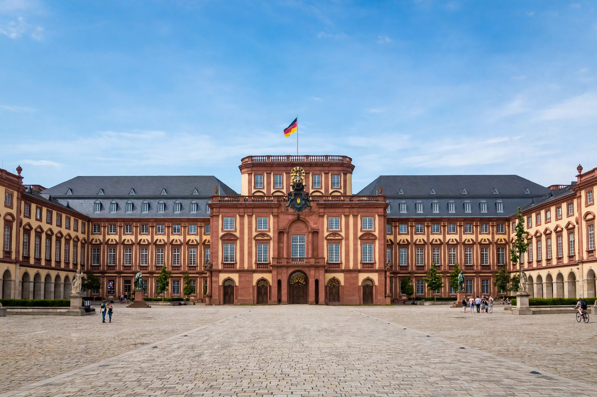

| Mannheim Palace | |
| German | Barockschloss Mannheim |
|---|---|
| Location | Mannheim, Baden-Württemberg, Germany |
| Built | 1720–1760 |
| Style | Baroque |
| Commissioned by | Charles III Philip and Charles Theodore, Electors Palatine |
| Current use | University of Mannheim; palace museum |
Mannheim Palace (German: Barockschloss Mannheim) is a large Baroque palace in Mannheim, Baden-Württemberg, Germany, built as the residence of the Prince-Electors of the Palatinate. Completed in 1760 after a forty-year building campaign, it is one of the largest palaces in Europe, with more than 400 rooms, and formed the centre of one of the most brilliant courts of 18th-century Germany, famed for its orchestra and its patronage of music and science.

In 1720 Elector Charles III Philip moved the Palatine court from Heidelberg to Mannheim and laid the foundation stone of a new palace on the site of earlier fortifications near the Rhine. Successive court architects — among them Jean Clemens Froimon, Guillaume d'Hauberat, Alessandro Galli da Bibbiena and Nicolas de Pigage — extended the complex under Charles Theodore, who made Mannheim a centre of the Enlightenment in Germany. The court moved to Munich in 1778 when Charles Theodore inherited Bavaria, and the palace's importance declined. It later served as a residence of the Grand Dukes of Baden; Stephanie de Beauharnais, Napoleon's adopted daughter, lived there in the early 19th century.
The palace was almost completely destroyed by bombing in the Second World War. It was rebuilt during the 1950s and 1960s with its Baroque exterior restored and simplified interiors; the state rooms, including the Rittersaal (Knights' Hall), the palace church and the electoral apartments, were reconstructed and now form a museum. Since 1946–47 the palace has housed much of the University of Mannheim, which is consequently known as a "university in a palace".
The complex is arranged around three courtyards, with a main corps de logis flanked by long wings enclosing the vast Ehrenhof, one of the largest palace courtyards in Europe. Ceiling paintings by Cosmas Damian Asam once decorated the Knights' Hall and palace church. The palace's sheer scale — its façade stretches some 440 metres across the wings — expressed the electoral ambition to rival Versailles.
Mannheim · Electoral Palatinate · Charles Theodore · University of Mannheim